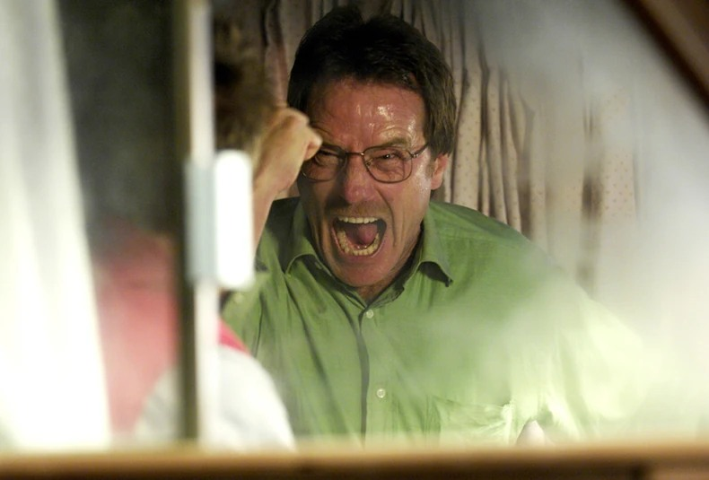
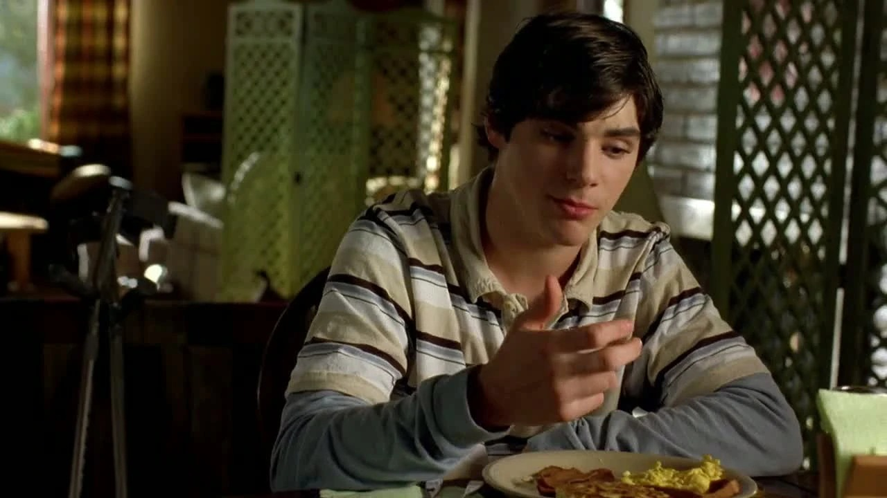
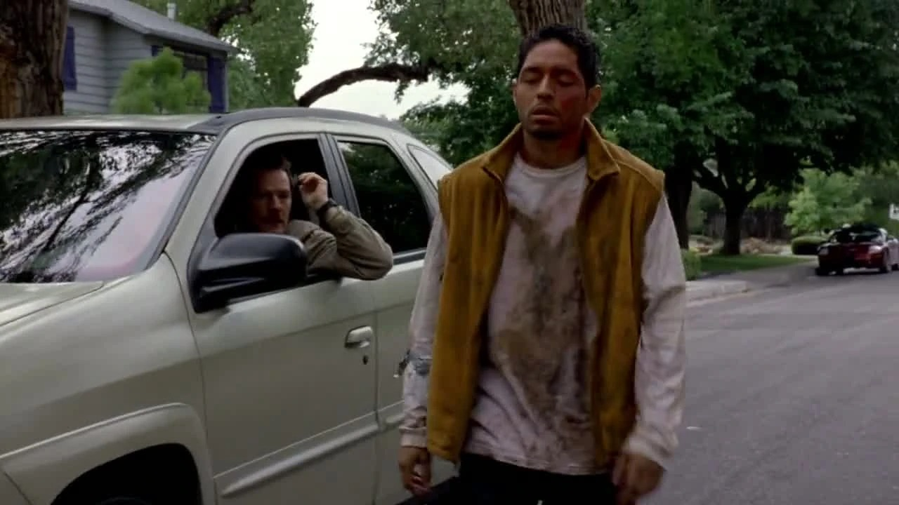
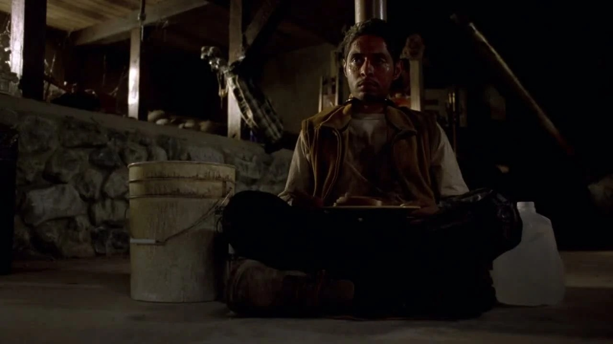
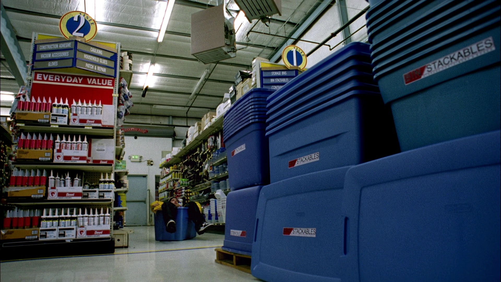
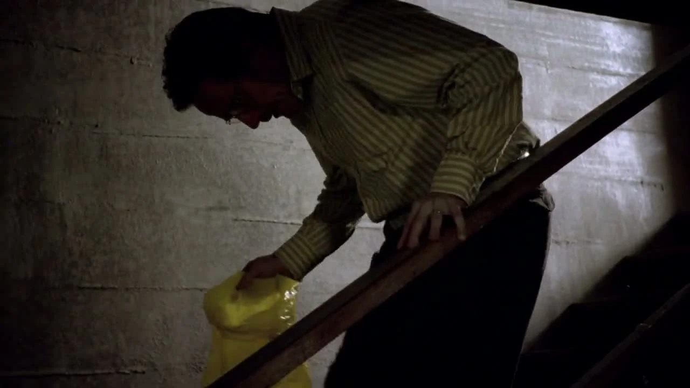
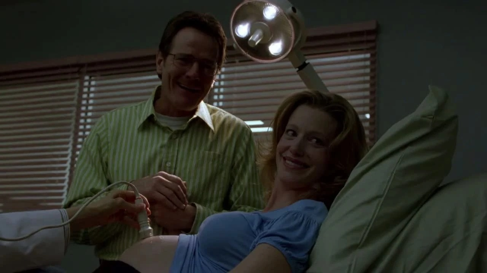
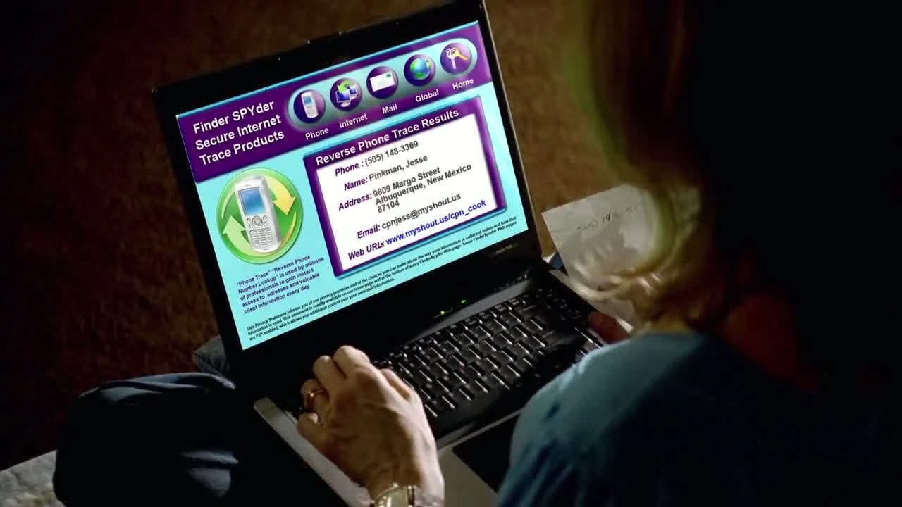
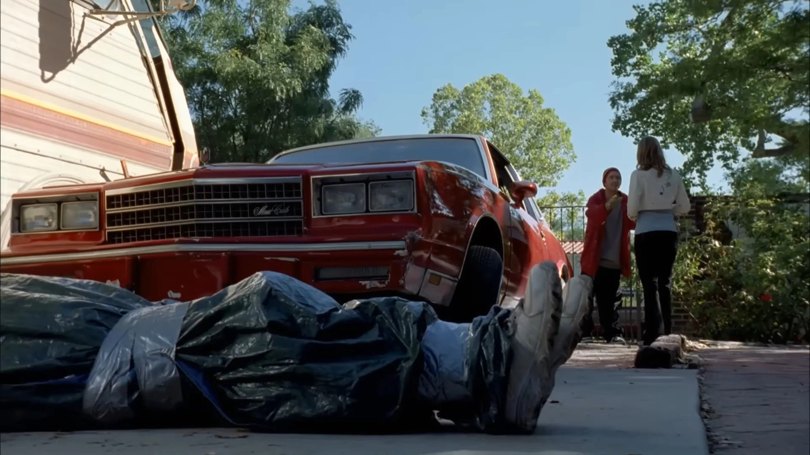
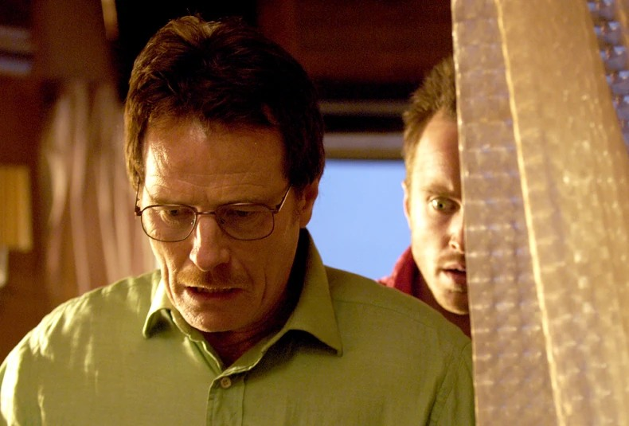

01
荒漠 → 杰西住处
“以后再无瓜葛”，说得太早。
剧情事实房车无法自行脱困，两人请人帮忙拖出，再把车开回杰西家。他们编造了事故解释，也约定收尾后互不往来。 [1][2]
这一场为什么重要 · 个人解读
向陌生人道谢的客气，与车里藏着的事实并排出现。沃尔特把“清理好就能退出”说得很确定，然而他既没有掌握现场，也没有能力保证接下来的选择。第一次越界创造的，是必须继续处理的问题。
因此 →结束合作的愿望，先变成把后果转移到杰西家。

把秘密带回家，
就能关上门了吗？
一个仍然活着的人，一枚硬币，一间不再安全的房子。
他们忙着善后，也在制造下一场麻烦。
剧透边界 剧透截至 S01E02，包含本集结尾
12 个剧情节点 · 5 位人物 · 04 组冲突首集让沃尔特跨过门槛，第二集让他发现：门并不会在身后自动关好。克雷兹八还活着，遗体必须处理，家庭生活也在按原来的时间表继续。两人想用分工把混乱压缩成几件任务，却发现每一次拖延和隐瞒都需要别人替自己承受。
读这一集，跟住三条线公平的幻觉 / 迟疑的代价 / 谎言的方向

剧情事实沃尔特和杰西请人帮助房车脱困，再把它开回杰西住处。他们用普通事故解释狼狈，约定善后完成后互不往来。 [2]
个人解读他们急着想象一个重新清白的明天，仿佛只要把这一天藏好，彼此便能退回原来的身份。随后出现的幸存者立刻打断这份确定感：真正的后果，会要求他们继续选择。
本页只使用截至 S01E02 已揭示的信息；下文包含本集结尾。
沿本集事件顺序分为三幕；部分节点合并相邻动作。人物的推测与他们实际知道的事分别写明。
后果无法留在荒漠。
剧情事实房车无法自行脱困，两人请人帮忙拖出，再把车开回杰西家。他们编造了事故解释，也约定收尾后互不往来。 [1][2]
向陌生人道谢的客气，与车里藏着的事实并排出现。沃尔特把“清理好就能退出”说得很确定，然而他既没有掌握现场，也没有能力保证接下来的选择。第一次越界创造的，是必须继续处理的问题。
因此 →结束合作的愿望，先变成把后果转移到杰西家。

剧情事实杰西打到家中，告诉沃尔特克雷兹八还活着。沃尔特当着家人用应付电话推销的语气回应，坚持要等放学后再去。 [1][2]
同一句话同时有两个听众：杰西听见推脱，家人听见普通的生活噪声。职业作息被他当成维持身份的外壳，却把看守俘虏的风险留给搭档。日常没有隔离犯罪，反而成了隐瞒犯罪的工具。
因此 →电话使斯凯勒第一次得到可以追查的线索。

剧情事实沃尔特在路边发现逃出来的克雷兹八。对方认出他后试图跑开，撞树倒下，被沃尔特带回杰西家。 [1][2]
之前的计划仿佛只需安排遗体，现在却必须正视一个仍在求生的人。街道也把风险拉出封闭房车：别人可能看见，俘虏也可能逃走。两人不能继续把荒漠经验误认为一场无人知道的孤立事故。
因此 →克雷兹八被重新带进住处，成为必须面对的伦理难题。

剧情事实两人把克雷兹八锁在柱旁。沃尔特追问他的生意层级和暴力名声，试探是否存在放人的可能。 [1][2]
沃尔特急于把对方归入可以讲道理的类别，因为这样就能替自己找到不杀人的出口。杰西提醒他，对方昨天确实试图杀他们。恐惧与道德顾虑都真实存在，但此时谁也没有一个可以轻松保证安全的答案。
因此 →他们把没有答案的判断，改写成了一次任务分配。
他们试图把险境当作已经过去的事，幸存者却让“回归日常”的设想立刻破产。
公平分工，不能替人承担判断。
剧情事实两人抛硬币决定谁处理埃米利奥的遗体、谁处理活着的克雷兹八。杰西选择前一项，沃尔特承担后一项。 [1][2]
形式上的公平很迷人：结果由随机决定，似乎就不会有人欠谁。可“怎么分”绕开了“应不应该”和“能不能做”。硬币没有创造新的能力，只让两人以后能够用约定互相追责，避免独自承认自己的选择。
因此 →各自分到的任务，马上暴露了分工以外的困难。

剧情事实杰西寻找合适容器并打电话问材料要求。沃尔特以学生从前不认真听课为由，拒绝耐心解释；杰西没有买到合用的容器。 [1][2]
技术指令要奏效，需要对方理解并能够执行。沃尔特此刻仍把合作当课堂纪律，杰西则把不耐烦当作不必服从的理由。两人都在维护自己的位置，实际的问题却没有被解决。后果不会因为其中一方“说过了”就自动消失。
因此 →未被解决的实际困难，被杰西用一个自认为省事的替代方案绕过。

剧情事实沃尔特拿着袋子准备下楼，最终没有杀死克雷兹八。对方醒来要求喝水，他转而提供食物和生活用品。 [1][2]
杀人的想法在讨论里可以被压缩成一个词，行动却要求他靠近一个活着的人。照料与拘禁于是同时发生：他减轻眼前的残酷，又维持造成残酷的处境。迟疑保留了人性，也没有让整件事回到无害状态。
因此 →活着的俘虏继续等待，沃尔特把自己的承诺推迟到明天。
剧情事实杰西回来后发现沃尔特没有完成约定。沃尔特答应第二天处理，以陪斯凯勒产检为由离开，留下杰西和俘虏。 [1][2]
产检是重要的家庭责任，地下室的危险也没有因此停止。沃尔特想同时保住两种身份的时间表，结果是每次离开，都要别人留在他不愿面对的那一端。分工名义上各半，承受的时间和空间却明显不等。
因此 →他返回家庭时，家庭成员已经开始追问。
抛硬币把两件可怕的事变成了分工，却没有给任何一个人增加经验、意愿或正当性。
秘密从电话走向房屋。

剧情事实两人得知孩子是女孩。斯凯勒随后询问杰西是谁，指出丈夫深夜归家、隐瞒行踪和接到电话的异常；沃尔特说杰西卖大麻给他。 [1][2]
得知新生命的温情没有消除信任危机。他用一种较小的越界遮住更大的事实，还把妻子的追问解释成过度干涉。斯凯勒得到一个可以理解的版本，也被这个版本引向错误方向。对女儿的爱，与欺骗妻子的行为，在同一场里并存。
因此 →“大麻”成为妻子接下来行动的依据。

剧情事实斯凯勒通过来电信息找到杰西的个人页面和地址，确认他曾在沃尔特任教的学校读书。 [1][2]
调查说明她没有满足于含糊的回答；但再认真搜索，也只能沿着丈夫留下的假轨道推进。观众比她多知道地下室，这种信息差使她显得既果断又危险地接近现场。不能把看不见真相误读成她缺少判断力。
因此 →她决定亲自去找杰西，把问题当成可以警告退去的家庭侵扰。

剧情事实斯凯勒到杰西家警告他别再向丈夫卖大麻，并提到汉克是 DEA 探员。杰西正在处理现场，没有让她发现被遮住的遗体。 [1][2]
她认为自己掌握了足够的事实，杰西却担心她已经知道全部。紧张与黑色幽默来自两种完全不同的理解。她的警告也把沃尔特与执法亲属的关系告诉了搭档，让“保护家庭”的谎言反过来增加合作中的怀疑。
因此 →她离开后，屋里真正的问题仍待处理。

剧情事实杰西没有按要求使用容器，而在浴缸中处理遗体，结果浴缸与楼板坍塌。另一路上，荒漠里的孩子发现了遗落的面罩。 [1][2]
坍塌把“处理完就看不见”的幻想直接变成空间灾难。沃尔特的知识、杰西的擅自变通与彼此的敌意，都没有让责任消失。面罩的结尾又打开另一种泄漏：他们以为留在远处的东西，已经开始进入别人的视线。
因此 →本集停在两条泄漏同时出现的地方：住处毁坏，遗落物被发现。
谎言带斯凯勒找错对象，错误处置又毁坏了住处；他们想隔离的几种生活，反而被连得更紧。
五位人物，三次关系截面。点击头像看当下的诉求与信息；图中“共同日常”也包括信息被隐瞒的关系。
幸存者与遗体进入杰西住处，家庭早餐仍维持原样。

化学老师 / 秘密的承担者
尽快摆脱现场，恢复家人眼中的正常生活。
专业知识、家庭中的信息优势，以及对杰西的指挥权。
把活下来的克雷兹八带回，迟迟无法杀人；用购买大麻的说法解释杰西的电话。
他想把死亡当作收尾任务，真正面对一个活人时却无法按计划执行。拖延没有撤销选择，只把代价转移给屋主和家人。
相信清理完便能各走各路。
从搭档、婚姻、俘虏与善后四个角度，看一次“公平分工”为何无法结束冲突。
两人可以把硬币当作公平程序，却不能假装事情原本对等。沃尔特有一个需要按时回去的家，杰西的家则被直接改造成现场。前者的拖延，会成为后者必须熬过去的夜晚。
杰西误用浴缸，应为这个选择负责；沃尔特以训学生的方式拒绝解释，也使合作缺少必要的理解。把错误完全推给“笨学生”，会遮住分工背后的权力和空间差异。
个人解读：责任既要按具体行为区分，也要看到谁有能力把代价留给别人。
把短句放回发生的场景。对白不是人物全部动机的证明，也可能是他选择让别人听见的那一部分。
We flipped a coin!我们抛过硬币的！中文自译
沃尔特准备离开，杰西提醒他还没有履行自己的部分。
他抓住的是一份可以拿来讨说法的约定。反复强调程序，也透露出他对自己没有真正议价能力的焦虑。
英文据本集对白转录核对，共 15 个词；中文为本页自译。图片用于提示人物与场景，具体镜头边界见图注。
物件、空间和声音怎样让人物的变化变得可见。以下为画面观察与个人解读。
抛硬币把恐惧变成程序。个人解读：程序可以分配任务，无法让任务本身变得正当，也无法保证双方有能力执行。
回到相关场景 ↗早餐桌上同一通电话，被丈夫、妻子和来电者理解成不同事件。个人解读：日常语气成了秘密最方便的包装。
回到相关场景 ↗杰西不断说这是自己的家，现场却一项项占据它。个人解读：住宅的损坏把权力不对等变成可见的空间变化。
回到相关场景 ↗课堂里沃尔特谈手性，随后又在不同身份间切换。个人解读可以读出呼应；课堂说法本身不应被当成医学或化学结论。
回到相关场景 ↗得知女儿的温情与关于杰西的争执相接。个人解读：他想保护的未来，正依赖于他不断削弱的夫妻信任。
回到相关场景 ↗面罩被孩子发现时，沃尔特和杰西并不在场。个人解读：事件不再只在他们能够控制的叙述范围里发展。
回到相关场景 ↗第二集把首集的速度降下来，让我们看清越界之后真正费时的部分：看守、说谎、迟疑、争执，以及忍受已经改变的日常。
沃尔特的犹豫让人物仍有道德重量，杰西的愤怒让合作中的代价分配显形。两人都想结束这一段，却还在用会延长它的方法做事。
回到那次看似公平的分工 ↗剧透截至第一季第2集，包含本集结尾。不涉及后续集数或其他作品的揭示。 · 本篇止于此，不预告后续情节。